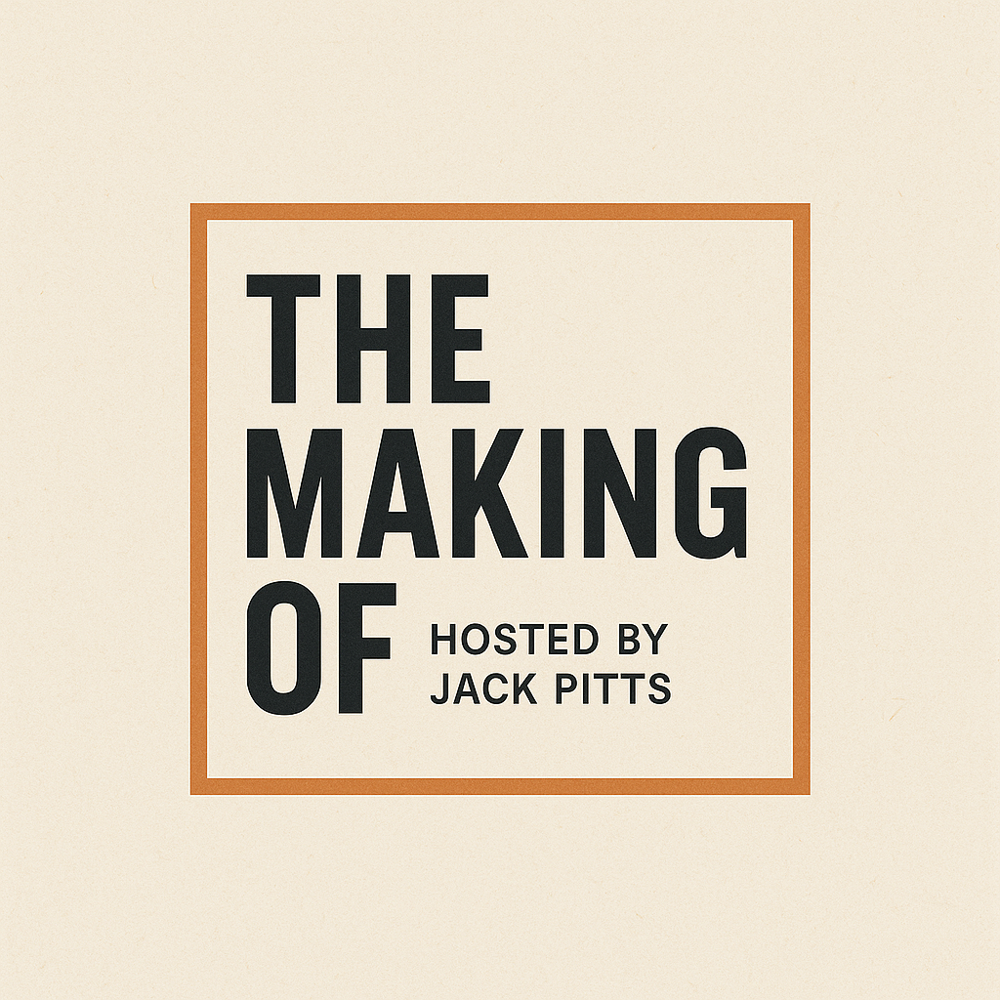

No. 13
A Goldman Sachs banker turned third-generation Vegas casino CEO on advising Disney's Pixar deal and running billion-dollar gaming floors.
Alex Dixon / Resorts World Las Vegas
Service industries, generational family businesses, the operators most people walk past. Each conversation digs into what actually compounded into a real company. The false starts, the unsexy middle, the years no one writes about.

A Goldman Sachs banker turned third-generation Vegas casino CEO on advising Disney's Pixar deal and running billion-dollar gaming floors.
From poverty in Flint and seventeen years of corporate work to a laundromat empire built on aggressive saving and ninety-hour weeks.
How a Macon kid turned a side-hustle car wash into more than thirty acquisitions and one of the country's largest express wash platforms.
"Brookfield businessman featured on podcast"
In this episode of The Making Of Hosted By Jack Pitts, I sat down with Ari Jacoby, Co-Founder & CEO of Concentrate AI, and Zach Moskow, Founding GTM & Ops at Concentrate AI. Concentrate recently launched out of stealth after raising $5.1 million and is building an LLM gateway that gives teams one API to access leading AI models, manage token spend, improve reliability, and add security and…
Read the full issueDoug Taylor, the Candyman, on building Taylor's Candy from a family operation into a distribution and manufacturing business. Featured in the Riverside-Brookfield Landmark.
Read the full issueGary Dennis, co-founder and former CEO of Mammoth Holdings, on building a leading car wash platform from humble Georgia beginnings through Georgia Tech, investment banking, and 20+ years of operations. The first episode of the show.
Read the full issueIn this episode of The Making Of Hosted By Jack Pitts, host Jack Pitts sits down with Nishank Gite, Co-Founder & CTO of Nirvana Robotics, to explore Nishank’s journey from physics and AI research into building a robotics company. The conversation covers Nishank’s background in collider physics, machine learning, neural networks, and robotics, along with the realities of building a hard-tech…
Read the full issueAlex Dixon, former CEO of Resorts World Las Vegas, on growing up a third-generation casino kid in Vegas, advising on Disney's acquisition of Pixar at Goldman Sachs, and leading billion-dollar gaming operations at MGM, Caesars, and Resorts World.
Read the full issueDavid Sauers, co-founder of Royal Restrooms, on his path from Savannah through golf and banking to building a luxury portable restroom franchise over 20+ years.
Read the full issueThe show is built for founders, operators, and family-business builders with a real story to tell. Not a launch announcement. Not a fundraising lap. A real conversation about what actually compounded into a company.
Sixty to seventy-five minutes, recorded remotely. No script. No homework binder. No prep deck. We dig into the unsexy middle, the false starts, and the years no one writes about. Episodes go up on Spotify, Apple Podcasts, and YouTube, then we push them on LinkedIn so your story keeps reaching the right people.
Light lift on your end. Show up and talk. One session is the whole ask.
Founders, operators, and family-business owners who have actually built something over years and can talk about it honestly. If you have run the thing, made payroll, and lived the boring middle, you will feel at home here.
If you are after a launch announcement, a fundraising lap, or a scripted promo, this is not the show. I am here for the real story, not a press release. Pure pitch decks and thought-leadership monologues usually land better somewhere else.
The origin, the false starts, the unsexy middle, and the decisions that compounded. Money, mistakes, the years no one writes about, and what you would tell someone standing where you started.
Almost nothing. No deck, no homework binder, no script. Bring a few stories you actually remember and are willing to tell straight. We can trade a couple of notes on angle beforehand if you want, but most guests skip it.
I edit lightly and publish to Spotify, Apple Podcasts, and YouTube. You get the links and a share card for your own channels, and I push the episode on LinkedIn so your story keeps reaching the right people.
Past guests include
Pick a time that works. We will hop on a quick intro call and figure out the right angle for your episode together.
"I work in finance, private equity, so I deal with business owners all the time. I was like, hey, why not do a podcast where I get to tell their stories?"
Jack Pitts, in the Riverside-Brookfield Landmark
Jack Pitts is the founder of Salt Creek Advisory, an AI-native deal sourcing and investment banking practice. Chicago-raised and Vanderbilt-educated, Jack is based in the Chicago area and spends his days around founders, operators, and investors. He started The Making Of Hosted By Jack Pitts to capture the stories he's always wanted to hear.
The show takes its inspiration from NPR's How I Built This, with a sharper focus on the operators and family-business builders behind companies most people walk past every day. Each episode unpacks what it actually takes to build something. The false starts, the unsexy middle, and the moments that compound into a real company.
Short, honest guides on going on a podcast as a founder. How to decide if it is worth your time, how to choose the right show, and how to be a guest people actually remember. No filler.
How to judge a founder podcast on its merits instead of a ranking, and the signals that separate a real conversation from a promo reel.
Read the guideThe moments when a podcast actually helps, the moments it does not, and how to tell the difference before you say yes.
Read the guideA simple way to match your story to the right format, host, and audience so the episode does something for you.
Read the guideWhat great guests do differently, from the stories they bring to the way they answer, and how to prepare without over-preparing.
Read the guideThe Making Of Hosted By Jack Pitts is an interview show about founders, operators, and family-business builders behind companies most people walk past. A new conversation goes up roughly every three weeks on Spotify, Apple Podcasts, and YouTube.
Jack Pitts is the founder of Salt Creek Advisory, an AI-native deal sourcing and investment banking practice. Chicago-raised and Vanderbilt-educated, he spends his days around founders, operators, and investors, and started the show to capture the stories he always wanted to hear. The show takes its inspiration from NPR's How I Built This, with a sharper focus on overlooked builders.
Riverside-Brookfield Landmark, "Brookfield businessman featured on podcast", January 13, 2026, by Stella Brown.